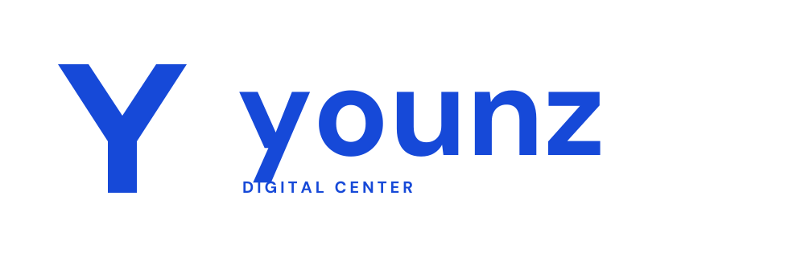
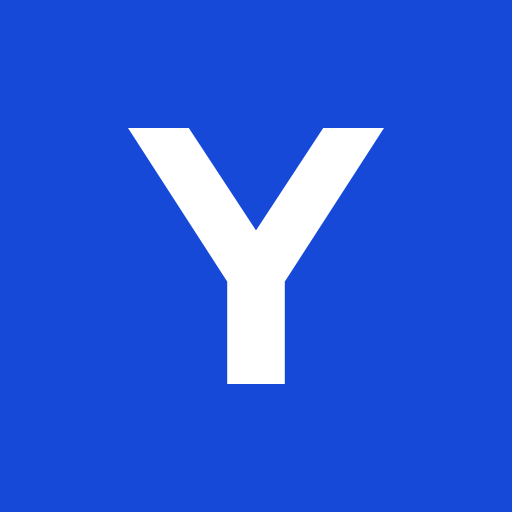

Younz Digital Center
Revisi 02 · Biru solid
Avatar & ukuran kecil

Warna utama
Royal blue · #1649D8
Satu warna. Tanpa gradasi, bayangan, dan aksen piksel.


Royal blue · #1649D8
Satu warna. Tanpa gradasi, bayangan, dan aksen piksel.